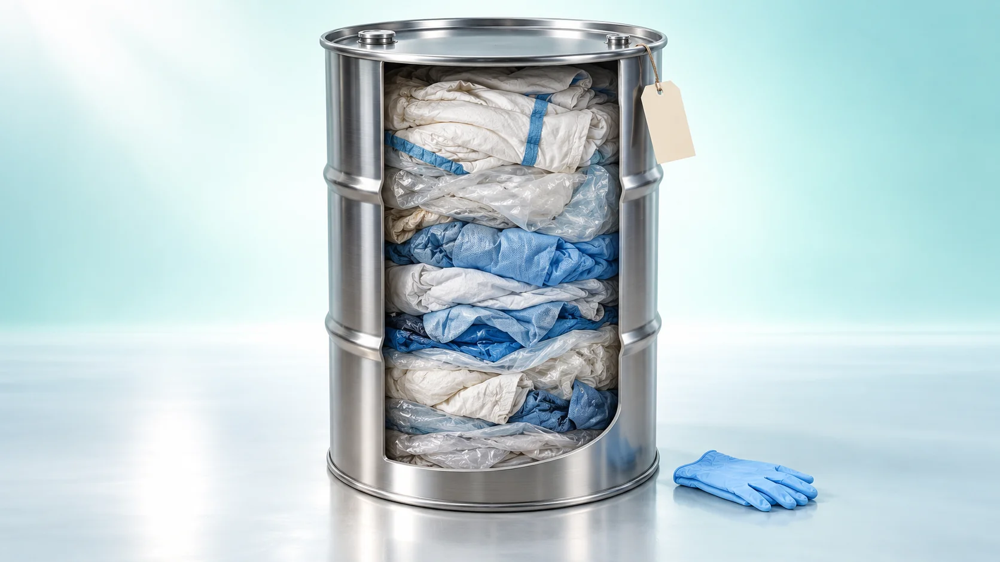
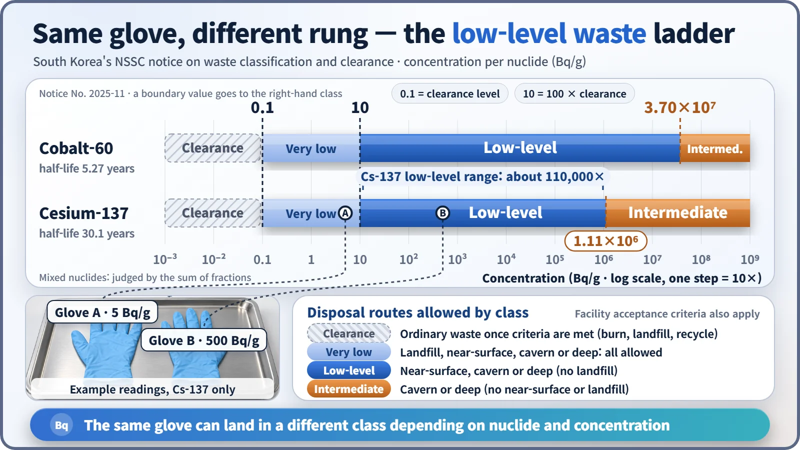
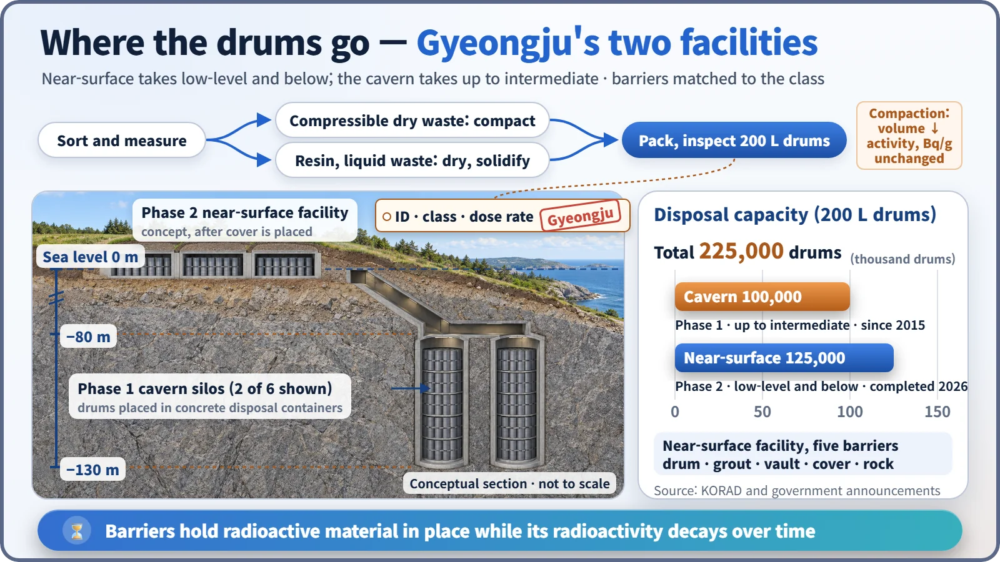

Society, Environment & the Future · 287
No Glowing Green Drums — The Real Face of Low-Level Radioactive Waste
Not green liquid but gloves, coveralls, filters and resin: the class is set by a measured number, and the number sets the barriers.

Low-level radioactive waste is mostly used coveralls, gloves, filters and resin, not glowing green liquid. What makes it "low-level" is not what the item is but its measured concentration in becquerels per gram, which must fall inside a legally defined band. That band then decides which barriers and how long a management period the waste needs. [1]
What you find when you open the lid
In cartoons and movies, radioactive waste is a dented yellow drum with fluorescent green liquid bubbling out of a crack. Open a real waste drum from a nuclear power plant and you'll mostly find flattened coveralls, gloves, plastic sheeting, rags and lumps set solid in cement. A disposal facility won't even accept liquid in that state.
Anyone who works in a nuclear plant puts on protective coveralls, shoe covers and gloves before entering a radiation-controlled area. Afterward these items may carry traces of radioactive material, so they can't simply be thrown away. The same goes for air filters and for tools and parts replaced during maintenance.
Waste comes from the water side too. The reactor's cooling water picks up small amounts of radioactive ions, and the material that captures them is ion-exchange resin: tiny beads that work much like those in a household water filter. Resins and filters can come out with high concentrations and are sometimes classified one level up. In the end, it is the number you measure, not the item, that decides the class. [2]
Why hospitals have so many bins
In a hospital, needles go into rigid sharps containers, blood-soaked gauze into medical waste boxes, and office paper into the ordinary trash. Sorting by hazard right at the start determines how each kind is handled afterward.
Radioactive waste is sorted the same way, at the point where it is generated. The difference is the yardstick. Hospitals sort by the type of infection risk; radioactive waste is sorted by a number, its concentration. And burning medical waste removes the hazard, but burning does not remove radioactivity. So radioactive waste is managed by locking it behind barriers and waiting for it to decay away on its own.
A four-rung ladder set by numbers
The unit that matters is Bq/g (becquerels per gram): how many atomic nuclei decay each second in one gram of waste. South Korea draws the lines in a notice from its Nuclear Safety and Security Commission (NSSC). For cesium-137, common at nuclear plants:
| Class | Cesium-137 concentration | What happens to it |
|---|---|---|
| Clearance | below 0.1 Bq/g | Leaves the radioactive waste system; incinerated, landfilled or recycled as ordinary waste |
| Very low-level | 0.1 to below 10 Bq/g | Below 100 times the clearance level |
| Low-level | 10 to below about 1.11×10⁶ Bq/g | Near-surface, cavern or deep disposal (no landfill) |
| Intermediate-level | 1.11×10⁶ Bq/g and above | Cavern or deep disposal |

Two things stand out. First, the low-level band is enormous: its bottom and top differ by more than 100,000 times. Second, the boundaries differ from nuclide to nuclide. Cobalt-60 has the same clearance level of 0.1, but its low-level upper limit is 37 million (3.70×10⁷) Bq/g. So there is no single number like "low-level means below so many becquerels." High-level waste is defined differently again, by decay heat and the concentration of long-lived alpha emitters together. [1]
Press, dry, set, pack
Once classified, waste is treated to reduce its volume and put it into a stable form, with the method chosen to suit the material.
- Compaction: dry waste such as coveralls and plastic is pressed into a drum; a large press may then crush the whole drum into a flat disc.
- Drying: water is removed from spent resin and concentrated liquid waste.
- Solidification: waste is set in cement or similar material so it cannot leak.
- Packaging: waste goes into a standard 200-litre drum marked with an ID number, its class and its surface dose rate (the radiation level measured at the drum's surface).
Does compaction reduce radioactivity? No. Squeeze a duvet into a vacuum storage bag and its volume shrinks, but its weight stays the same. Compaction leaves the total radioactive material and the mass unchanged, so the concentration per gram does not change either. Treatment turns waste into a form that is easier to handle and won't leak. And deliberately mixing in clean material to dilute waste below the clearance level is prohibited. [3]
Where the drums end up: Gyeongju
Packed drums go to South Korea's low- and intermediate-level radioactive waste disposal facility in Gyeongju, North Gyeongsang Province. The phase 1 cavern disposal facility, operating since 2015, holds 100,000 drums in six silos set in rock about 80–130 metres below sea level, and accepts waste up to intermediate level.
In May 2026 the phase 2 near-surface disposal facility was completed: concrete vaults close to the surface, wrapped in five barriers (drum, grout, vault, cover and rock). It takes low-level waste and below only, 125,000 drums. Low-level waste cannot go into a landfill-type facility that relies on natural ground alone; it needs at least engineered barriers. A phase 3 landfill-type facility for very low-level waste is still being planned. [4] [5]

Why is a few hundred years of management considered enough? Cesium-137 has a half-life of about 30 years, so after 300 years it has passed through 10 half-lives and fallen to about one-thousandth. Cobalt-60 (half-life 5.27 years) is effectively gone. Real safety assessments, of course, account for every nuclide, including the longer-lived ones. [6]
The principle inside one drum
Low-level radioactive waste is coveralls, filters, resins and similar items used at nuclear plants, hospitals and laboratories. The label means neither "harmless" nor "a lump of danger." It is an agreement: the concentration falls within a band set by law, so use the barriers and management period that fit that band. Just as a hospital keeps several bins, measuring accurately and sorting correctly from the start is where safety begins.